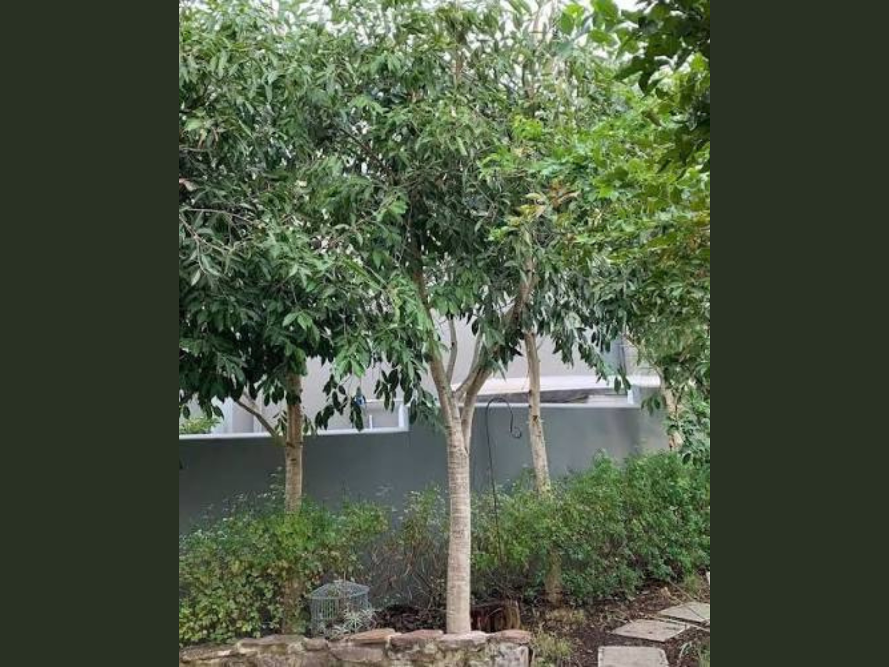

Scan
A visitor scans the QR code attached to the plant label.
Each QR code opens a clear mobile page containing the MKU identity, plant photographs, botanical information, uses and planting records.

Every page is generated from the plant catalogue data using one reusable design. Adding a plant does not require coding a new layout.
The QR code points to a permanent plant page. Text and photographs can be updated later without changing the printed QR code.
A visitor scans the QR code attached to the plant label.
The MKU logo, plant name and photographs appear immediately.
The visitor reads one continuous plant record containing all approved details.